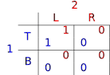
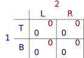
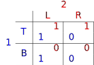
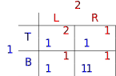
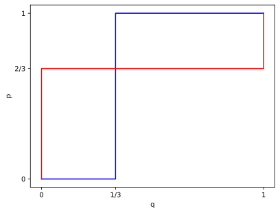
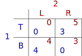
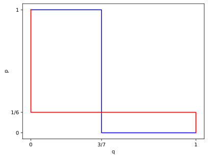
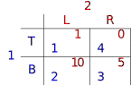
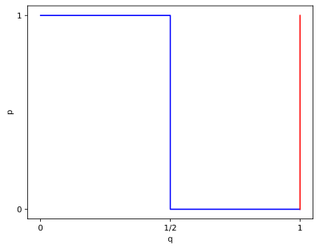

Computational Game Theory
Problem Sheet 2 - Strategic Form Games & Mixed Strategies
9 February 2021
Exercise 1: Solution concepts and social welfare concepts
Either prove or disprove each of the following statements in the context of \(2 \times 2\) games (disproving is usually best done with a counter-example).
Exercise 1a
True or false: If a player \(i\) has a dominant strategy in a game, then in every Nash equilibrium of that game player \(i\) will choose a dominant strategy.
Exercise 1a: Solution
False. In the following game \((B,R)\) is a Nash equilibrium although \(B\) and \(R\) are not dominant strategies. Moreover, \(T\) and \(L\) are (weakly) dominant.
Observe that the claim does hold, if a player has a strategy that strictly dominates all others, as she can always deviate to this strictly dominant action.
Exercise 1b
True or false: If a game has a dominant strategy equilibrium, then it is unique: the game has no other dominant strategy equilibria.
Exercise 1b: Solution
False. In the following game every strategy is (weakly) dominant and every strategy profile a dominant strategy equilibrium.
Exercise 1b: Solution
A slightly more interesting solution would be the following:
\((B,R)\) is also a Nash equilibrium even though \((T,L)\) is the only dominant strategy equilibrium. Again, observe an outcome in which all players play a strictly dominant strategy, i.e., a strategy that strictly dominates all other strategies of that player, will be unique.
Exercise 1c
True or false: Every dominant strategy equilibrium of a game is a Nash equilibrium.
Exercise 1c: Solution
True. We prove the contrapositive. Assume we have a strategy profile that is not a Nash equilibrium. Then, there is a player \(i\) and a strategy \(\sigma_i^\prime\in\Sigma_i\) such that \begin{equation*} u_i(\vec\sigma_{-i},\sigma'_i)>u_i(\vec\sigma)\text. \end{equation*} Hence, \(\sigma_i\) is not a dominant strategy and so \(\vec\sigma=(\sigma_1,\sigma_2)\) is not a dominant strategy equilibrium.
Exercise 1d
True or false: Every Nash equilibrium of a game is a dominant strategy equilibrium.
Exercise 1d: Solution
False - consider the same game from 1a:
Exercise 1e
True or false: If a game outcome \(\omega\) maximises utilitarian social welfare, then \(\omega\) is Pareto efficient.
Exercise 1e: Solution
True. Assume that \(\omega\) maximises utilitarian social welfare and, for contradiction that \(\omega\) is not Pareto efficient. Then there is an outcome \(\omega^\prime\) such that \(u_i(\omega')\ge u_i(\omega)\) for all agents \(i\) and \(u_j(\omega')>u_j(\omega)\) for some agent \(j\). It follows that \begin{equation*} u_1(\omega') + \dots + u_n(\omega') > u_1(\omega) + \dots + u_n(\omega)\text, \end{equation*} contradicting that \(\omega\) maximises utilitarian social welfare.
Exercise 1f
True or false: If a game outcome \(\omega\) is Pareto efficient, then it maximises utilitarian social welfare.
Exercise 1f: Solution
False. Consider the following game:
Here the outcome \(TL\) with payoffs \((1,2)\) is Pareto efficient but obviously does not maximise utilitarian social welfare.
Exercise 1g
True or false: If all utilities in a game are positive, then any outcome that maximises the product of utilities of players is Pareto efficient.
Exercise 1g: Solution
True, by the same argument as Exercise 1e. Assume that \(\omega\) maximises the product of agents' utilities and, for contradiction that \(\omega\) is not Pareto efficient. Then there is an outcome \(\omega'\) such that \(u_i(\omega')\ge u_i(\omega)\) for all agents \(i\) and \(u_j(\omega')>u_j(\omega)\) for some agent \(j\). It follows that \begin{equation*} u_1(\omega') \times \dots \times u_n(\omega') > u_1(\omega) \times \dots \times u_n(\omega)\text, \end{equation*} contradicting that \(\omega\) maximises the product of agents' utilities.
Exercise 1h
True or false: If all utilities in a game are positive, then any Pareto efficient outcome of the game will maximise the product of utilities of players.
Exercise 1h: Solution
False. Again, counter-example is the game of Exercise 1f:
Exercise 2: Nash equilibria in mixed strategies
If we use mixed strategies in a game, then we are in the domain of expected utility. Write down an expression for the expected utility of each player in a generic \(2 \times 2\) game, when a mixed strategy is given as a pair \((p,q) \in [0,1]^2\). That is, define the expressions \(\mathit{EU}_1(p,q)\) and \(\mathit{EU}_2(p,q)\).
Exercise 2a: Solution
Suppose player 1 has strategies \(\text{T}\) and \(\text{B}\), and player 2 has strategies \(\text{L}\) and \(\text{R}\). Moreover, suppose player 1 plays \(\text{T}\) with probability \(p\) and player 2 plays \(\text{L}\) with probability \(q\). Then for \(i \in \{1, 2\}\), we have, \begin{align*} \text{EU}_i(p,q) &= pq u_i(\text{TL}) \\ &+ p(1-q) u_i(\text{TR}) \\ &+ (1-p)q u_i(\text{BL}) \\ &+ (1-p)(1-q)u_i(\text{BR}). \end{align*}
Exercise 2b
Generalise the expression you obtained in the first part to \(n\) player games, where each player \(i \in N\) has pure strategy set \(\Sigma_i\). Denote a mixed strategy profile by \(\vec{\mathit{ms}} = (\mathit{ms}_1, \ldots, \mathit{ms}_n)\), where \(ms_i \in \Delta\Sigma_i\) is a mixed strategy for \(i\), i.e., a probability distribution over \(\Sigma_i\). Use \(\mathit{ms}_i(\sigma)\) to denote the probability of \(\sigma \in \Sigma_i\) being played in the mixed strategy \(\mathit{ms}_i\).
Hint: First define an expression \(P(\vec{\sigma},\vec{ms})\), meaning the probability that the pure strategies \(\vec{\sigma}\) are chosen given the mixed strategy profile \(\vec{ms}\). Then define expected utility using this expression.
Exercise 2b: Solution
First define, \begin{equation*} P(\vec{\sigma},\vec{ms}) = \prod_{j\in N}ms_j(\sigma_j) \end{equation*} Then the generalised expression for expected utility can be given by, \begin{equation*} EU_i(\vec{ms}) = \sum_{\vec\sigma\in\vec\Sigma}P(\vec{\sigma},\vec{ms})u_i(\vec \sigma) \end{equation*} Writing things out fully, the generalised expression would look like this: \begin{equation*} EU_i(\vec{ms})= \sum_{\vec\sigma\in\vec\Sigma}\left(\prod_{j\in N}ms_j(\sigma_j)\right)u_i(\vec \sigma). \end{equation*}
Exercise 3: Nash equilibria
For each of the following games:
- Identify any dominant strategies, dominant strategy equilibria, and pure Nash equilibria;
- Identify outcomes that are Pareto efficient, that maximise utilitarian social welfare, and that maximise egalitarian social welfare;
- Apply the principle of indifference to identify any fully mixed Nash equilibria;
- Compute the expected utility of each player for each fully mixed strategy equilibrium you identify.
- Sketch the best response curves of the players in each game (no need to make it fancy – a sketch will do)
Exercise 3a
This game is called "Bach or Stravinsky:"

Exercise 3a: Solution
1)
- Dominant strategies: none;
- Dominant strategy equilibria: none;
- Pure Nash equilibria: \((T,L)\) and \((B,R)\).
2)
- Pareto efficient: \((T,L)\) and \((B,R)\);
- Utilitarian social welfare maximizing: \((T,L)\) and \((B,R)\);
- Egalitarian social welfare maximizing: \((T,L)\) and \((B,R)\) (if no mixed strategies).
Exercise 3a: Solution
3)
For player \(1\): \begin{align*} &\text{EU}_2(L,p) = \text{EU}_2(R,p)\\ &\text{iff}\quad p u_2(TL) + (1-p) u_2(BL) = p u_2(TR) + (1-p) u_2(BR)\\ &\text{iff} \quad 1p + 0(1-p) = 0p + 2(1-p)\\ &\text{iff}\quad p =\frac{2}{3}. \end{align*}
Exercise 3a: Solution
For player \(2\): \begin{align*} & \text{EU}_1(T,q) = \text{EU}_1(B,q)\\ & \text{iff}\quad q u_1(TL) + (1-q) u_2(TR) = q u_2(BL) + (1-q) u_1(BR)\\ & \text{iff}\quad 2q + 0(1-q) = 0q + 1(1-q)\\ & \text{iff}\quad q=\frac{1}{3}. \end{align*} Hence, \((\frac{2}{3},\frac{1}{3})\) is a fully mixed Nash equilibrium.
Exercise 3a: Solution
4)
Expected utilities: \begin{align*} \text{EU}_1(p,q) & = \frac{1}{3}\cdot 2 + \frac{2}{2}\cdot 0 = \frac{2}{3} \\ \text{EU}_2(p,q) & =\frac{2}{3}\cdot 0 + \frac{1}{3}\cdot 2 = \frac{2}{3} \end{align*}
Exercise 3a: Solution
5)
Exercise 3b
Exercise 3b: Solution
1)
- Dominant strategies: none;
- Dominant strategy equilibria: none;
- Pure Nash equilibria: \((T,R)\) and \((B,L)\).
2)
- Pareto efficient: \((T,R)\) and \((B,L)\);
- Utilitarian social welfare maximizing: \((T,R)\) and \((B,L)\);
- Egalitarian social welfare maximizing: \((B,L)\).
Exercise 3b: Solution
3)
For player \(1\): \begin{align*} & \text{EU}_2(L,p) = \text{EU}_2(R,p) \\ & \text{iff}\quad p u_2(TL) + (1-p) u_2(BL) = p u_2(TR) + (1-p) u_2(BR) \\ & \text{iff}\quad 0p + 4(1-p) = 5p + 3(1-p) \\ & \text{iff}\quad p = \frac{1}{6} \end{align*}
Exercise 3b: Solution
For player \(2\): \begin{align*} & \text{EU}_1(T,q) = \text{EU}_1(B,q) \\ & \text{iff}\quad q u_1(TL) + (1-q) u_2(TR) = q u_2(BL) + (1-q) u_1(BR) \\ & \text{iff}\quad 0q + 3(1-q) = 4q + 0(1-q) \\ & \text{iff}\quad q=\frac{3}{7}. \end{align*} Hence, \((\frac{1}{6},\frac{3}{7})\) is a fully mixed Nash equilibrium.
Exercise 3b: Solution
4)
Expected utilities: \begin{align*} \text{EU}_1(p,q) & = \frac{3}{7}\cdot 0 + \frac{4}{7}\cdot 3 = \frac{12}{7} = 1\frac{5}{7} \\ \text{EU}_2(p,q) & = \frac{1}{6}\cdot 0 + \frac{5}{6}\cdot 4 = \frac{20}{6} = \frac{10}{3} = 3\frac{1}{3} \end{align*}
Exercise 3a: Solution
5)
Exercise 3c
Exercise 3c: Solution
1)
- Dominant strategies: for column player \(L\);
- Dominant strategy equilibria: none;
- Pure Nash equilibria: \((B,L)\).
2)
- Pareto efficient: \((T,R)\), \((B,L)\) and \((B,R)\) (all but \((T,L)\));
- Utilitarian social welfare maximizing: \((B,L)\);
- Egalitarian social welfare maximizing: \((B,R)\).
Exercise 3c: Solution
3)
For player \(1\): \begin{align*} & \text{EU}_2(L,p) = \text{EU}_2(R,p) \\ & \text{iff}\quad p u_2(TL) + (1-p) u_2(BL) = p u_2(TR) + (1-p) u_2(BR) \\ & \text{iff}\quad 1p + 10(1-p) = 0p + 5(1-p) \\ & \text{iff}\quad p = 1\frac{1}{4} \end{align*} In this case the equations do not have a solution in \([0,1]\), and so we may conclude that there is no fully mixed equilibrium.
4)
Not applicable. There is no fully mixed Nash equilibrium.
Exercise 3a: Solution
5)
Exercise 4: Mixed Nash equilibria and the indifference principle
This question refers to the "generic" \(2\times 2\) game that we discussed in the lecture, where the row player has pure strategies \(T\) and \(B\), and the column player has strategies \(L\) and \(R\). Prove that a pair of probabilities \((p,q) \in (0,1)^2\) is a mixed strategy Nash equilibrium in the generic \(2 \times 2\) game iff: \begin{align*} \text{EU}_1(T,q) & = \text{EU}_1(B,q) \quad \text{and,} \\ \text{EU}_2(L,p) & = \text{EU}_2(R,p) \end{align*}
Exercise 4: Solution
First assume that \begin{equation*} \text{EU}_1(T,q) = \text{EU}_1(B,q). \end{equation*} We aim to show that player \(1\) does not want to deviate to any other pure or mixed strategy. To this end consider an arbitrary \(p'\in[0,1]\). Then we have, \begin{align*} \text{EU}_1(p,q) & = p\text{EU}_1(T,q) + (1-p)\text{EU}_1(B,q) \\ & = p\text{EU}_1(T,q) + (1-p)\text{EU}_1(T,q) \\ & = \text{EU}_1(T,q) \\ & = p'\text{EU}_1(T,q) + (1-p')\text{EU}_1(T,q) \\ & = p'\text{EU}_1(T,q) + (1-p')\text{EU}_1(B,q) \\ & = \text{EU}_1(p',q)\text. \end{align*}
Exercise 4: Solution
It follows that player \(1\) does not want to deviate from mixed strategy \(p\). The argument for the second player is analogous and we may conclude that \((p,q)\in(0,1)^2\) is a fully mixed Nash equilibrium.
Exercise 4: Solution
For the forward direction, assume that \((p,q)\in(0,1)^2\) is a fully mixed Nash equilibrium and for a contradiction, further suppose that, \begin{equation*} \text{EU}_1(T,q) \neq \text{EU}_1(B,q) \quad \text{or} \quad \text{EU}_2(L,p) \neq \text{EU}_2(R,p). \end{equation*} WLOG, we may assume the former and that \begin{equation*} \text{EU}_1(T,q) > \text{EU}_1(B,q). \end{equation*}
Exercise 4: Solution
This implies that, \begin{align*} \text{EU}_1(p,q) & = p\text{EU}_1(T,q)+(1-p)\text{EU}_1(B,q) \\ & < p\text{EU}_1(T,q)+(1-p)\text{EU}_1(T,q) \\ &=\text{EU}_1(T,q), \end{align*} meaning player 1 would be better off playing \(T\) with probability \(1\). Thus \((p,q)\) is not a Nash equilibrium.
Exercise 5
Consider the following scenario:
Two firms, X and Y, provide a service based on machine learning.The market share of each firm is directly proportional to the quality of its service, which, in turn, is directly proportional to the size of the data set it has: thus, if X has \(x\) data points and Y has \(y\) data points, the profit of X (in £) is \(\frac{x}{x+y}\cdot M\) and the profit of Y (in £) is \(\frac{y}{x+y}\cdot M\), where \(M\) is the overall value of the market.
Exercise 5
Initially, firm X possesses \(1\) million data points and firm Y possesses \(2\) million data points. They are both presented with an opportunity to buy a new corpus of data, consisting of \(n\) million data points, where \(n>0\), at price \(P\) (in £), \(P>0\).If both firms express the desire to buy, each of them gets one half of the new data, i.e., \(\frac{n}{2}\) points, and pays \(\frac{P}{2}\).
Exercise 5a
Describe this setting as a two-player game, where each player's choice of actions is \(\text{Buy}\) (buy) and \(\text{NotBuy}\) (do not buy). For simplicity, assume \(M=1\) in this and subsequent parts.
Exercise 5a: Solution
Each player has two actions: \(\text{B}\) (buy) and \(\text{NB}\) (not buy). The payoffs can be described by the following payoff matrix, where X is the row player, Y is the column player, the first row/column corresponds to \(\text{B}\), and the second row/column corresponds to \(\text{NB}\):

Exercise 5b
Suppose that \(n\) is fixed. Under what conditions on the price \(P\) is \(\text{B}\) a weakly dominant strategy for firm X? Under what conditions on \(P\) is \(\text{B}\) a weakly dominant strategy for firm Y? NB: note that we are after a weakly dominant strategy here, so must always be at least as good and in one case strictly better.
Exercise 5b: Solution
For \(\text{B}\) to be a weakly dominant strategy for firm X, we have to have \begin{align*} \frac{1}{2}\left(\frac{n+2}{n+3}-P\right) &\ge \frac{1}{n+3} \quad \text{and,}\\ \frac{n+1}{n+3} -P &\ge \frac{1}{3}, \end{align*} with at least one of these inequalities being strict.
The first constraint gives us \(P\le \frac{n}{n+3}\) and the second constraint gives us \(P\le \frac{2n}{3(3+n)}\). As the first constraint is subsumed by the second constraint, we obtain \(P\le \frac{2n}{3(n+3)}\).
Exercise 5b: Solution
Similarly, solving for firm Y, we obtain, \begin{align*} \frac{1}{2}\left(\frac{n+4}{n+3}-P\right) &\ge \frac{2}{n+3} \quad \text{and,}\\ \frac{n+2}{n+3} -P &\ge \frac{2}{3}. \end{align*} Again, the second constraint subsumes the first constraint, and we get \(P\le \frac{n}{3(n+3)}\).
Exercise 5c
Suppose that \(n\) is fixed. Characterise the range of values of \(P\) such that \((\text{B}, \text{B})\) is a Nash equilibrium.
Exercise 5c: Solution
We have to have \begin{align*} \frac{1}{2}\left(\frac{n+2}{n+3}-P\right) &\ge \frac{1}{n+3}\\ \frac{1}{2}\left(\frac{n+4}{n+3}-P\right) &\ge \frac{2}{n+3} \end{align*} Both constraints are equivalent to \(P\le \frac{n}{n+3}\).
Exercise 5d
Suppose that \(n\) is fixed. Characterise the range of values of \(P\) such that \((\text{NB}, \text{NB})\) is a Nash equilibrium.
Exercise 5d: Solution
We have to have \begin{align*} \frac{n+1}{n+3} -P &\le \frac{1}{3}\\ \frac{n+2}{n+3} -P &\le \frac{2}{3}. \end{align*} The first constraint subsumes the second constraint, so we obtain \(P\ge \frac{2n}{3(n+3)}\).
Exercise 5e
Suppose that \(n\) is fixed. Are there values of \(P\) such that \((\text{B}, \text{NB})\) or \((\text{NB}, \text{B})\) is a Nash equilibrium?
Exercise 5e: Solution
No. We have seen that, as long as \(P < \frac{n}{n+3}\), for each firm the unique best response to \(\text{B}\) is \(\text{B}\). Thus, a strategy profile where one player chooses \(\text{B}\) and the other player chooses \(\text{NB}\) cannot be an equilibrium for \(0 \le P < \frac{n}{n+3}\). On the other hand, if \(P> \frac{2n}{3(n+3)}\), the unique best response to \(\text{NB}\) is \(\text{NB}\), so for \(1\ge P>\frac{2n}{3(n+3)}\) a strategy profile where one player chooses \(\text{B}\) and the other player chooses \(\text{NB}\) cannot be an equilibrium either. As the union of these two ranges covers all of \([0, 1]\), the claim follows.